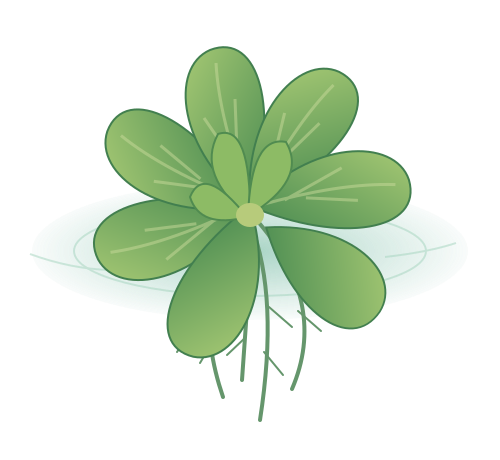

看看葉片
觀察葉片的顏色、形狀和排列方式。
WATER WORLD · 水中世界
四年級自然小探險你知道為什麼大萍可以漂浮在水面嗎？
讓我們一起探索吧！
拖一拖、轉一轉，看看水面上與水面下的不同。

水面上，有葉片水面下，也有根！TODAY'S MISSION
觀察葉片的顏色、形狀和排列方式。
發現根的位置，分辨有沒有固定在水底。
用自己的話，說明大萍為什麼能漂浮。
電腦：拖曳旋轉、滾輪縮放。手機：一指轉動、兩指縮放。點數字標記看介紹；如果迷路了，按「重設視角」。
LOOK CLOSER
請轉動 3D 模型，仔細觀察大萍的葉片與根部。
正在準備大萍模型……
教學示意模型，非實物比例。葉片裡的含氣構造沒有放大畫出。
LET'S TALK
和組員分享你的發現，並將觀察結果記錄在學習單中。
小提示：說出「我看到……」，再說「我認為……，因為……」。